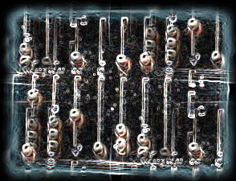
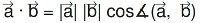
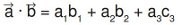
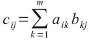

Matrix Arithmetics under NumPy and Python
 In the previous chapter of our introduction in NumPy we have demonstrated how to create and change Arrays. In this chapter we want to show, how we can perform in Python with the module NumPy all the basic Matrix Arithmetics like
- Matrix addition
- Matrix subtraction
- Matrix multiplication
- Skalar product
- Cross product
- and lots of other operations on matrices
The arithemtic standard Operators
- +
- -
- *
- /
- **
- %
>>> x = np.array([1,5,2]) >>> y = np.array([7,4,1]) >>> x + y array([8, 9, 3]) >>> x * y array([ 7, 20, 2]) >>> x - y array([-6, 1, 1]) >>> x / y array([0, 1, 2]) >>> x % y array([1, 1, 0])
Vector Addition and Subtraction
 Many people know vector addition and subtraction from physics, to be exact from the
parallelogram of forces. It is a method for solving (or visualizing) the results of
applying two forces to an object.
Many people know vector addition and subtraction from physics, to be exact from the
parallelogram of forces. It is a method for solving (or visualizing) the results of
applying two forces to an object.
The addition of two vectors, in our example (see picture) x and y, may be represented graphically by placing the start of the arrow y at the tip of the arrow x, and then drawing an arrow from the start (tail) of x to the tip (head) of y. The new arrow drawn represents the vector x + y
>>> x = np.array([3,2]) >>> y = np.array([5,1]) >>> z = x + y >>> z array([8, 3]) >>>
 Subtracting a vector is the same as adding its negative. So, the difference of the vectors x and y
is equal to the sum of x and -y:
Subtracting a vector is the same as adding its negative. So, the difference of the vectors x and y
is equal to the sum of x and -y: x - y = x + (-y)
Subtraction of two vectors can be geometrically defined as follows: to subtract y from x, we place the end points of x and y at the same point, and then draw an arrow from the tip of y to the tip of x. That arrow represents the vector x - y, see picture on the right side.
Mathematically, we subtract the corresponding components of vector y from the vector x.
Scalar Product / Dot Product
In mathematics, the dot product is an algebraic operation that takes two coordinate vectors of equal size and returns a single number. The result is calculated by multiplying corresponding entries and adding up those products. The name "dot product" stems from the fact, that the centered dot "·" is often used to designate this operation. The name "scalar product" focusses on the scalar nature of the result. of the result.Definition of the scalar product:

We can see from the definition of the scalar product, that it can be used to calculate the cosine of the angle between two vectors.
Calculation of the scalar product:

Finally, we want to demonstrate how to calculate the scalar product in Python:
>>> x = np.array([1,2,3]) >>> y = np.array([-7,8,9]) >>> np.dot(x,y) 36 >>> dot = np.dot(x,y) >>> x_modulus = np.sqrt((x*x).sum()) >>> y_modulus = np.sqrt((y*y).sum()) >>> cos_angle = dot / x_modulus / y_modulus # cosinus of angle between x and y >>> angle = np.arccos(cos_angle) >>> angle 0.80823378901082499 >>> angle * 360 / 2 / np.pi # angle in degrees 46.308384970187326 >>>
Matrix Class
The matrix objects are a subclass of the numpy arrays (ndarray). The matrix objects inherit all the attributes and methods of ndarry. Another difference is, that numpy matrices are strictly 2-dimensional, while numpy arrays can be of any dimension, i.e. they are n-dimensional.The most important advantage of matrices is that the provide convenient notations for the matrix mulitplication. If X and Y are two Matrices than X * Y defines the matrix multiplication. While on the other hand, if X and Y are ndarrays, X * Y define an element by element multiplication.
>>> x = np.array( ((2,3), (3, 5)) )
>>> y = np.array( ((1,2), (5, -1)) )
>>> x * y
array([[ 2, 6],
[15, -5]])
>>> x = np.matrix( ((2,3), (3, 5)) )
>>> y = np.matrix( ((1,2), (5, -1)) )
>>> x * y
matrix([[17, 1],
[28, 1]])
Matrix Product
The matrix product of two matrices can be calculated if the number of columns of the left matrix is equal to the number of rows of the second or right matrix.The product of a (l x m)-matrix A = (aij)i=1...l, j= 1..m and an (m x n)-matrix B = (bij)i=1...m, j= 1..n is a matrix C = (cij)i=1...l, j= 1..n, which is calculated like this:

The following picture illustrates it further:

If we want to perform matrix multiplication with two numpy arrays (ndarray), we have to use the dot product:
>>> x = np.array( ((2,3), (3, 5)) )
>>> y = np.matrix( ((1,2), (5, -1)) )
>>> np.dot(x,y)
matrix([[17, 1],
[28, 1]])
Alternatively, we can cast them into matrix objects and use the "*" operator:
>>> np.mat(x) * np.mat(y)
matrix([[17, 1],
[28, 1]])
Simple Practical Application for Matrix Multiplication
 In the following practical example, we come to talk about the sweet things of life.
In the following practical example, we come to talk about the sweet things of life. Let's assume there are four people, and we call them Lucas, Mia, Leon and Hannah. Each of them has bought chocolates out of a choice of three. The brand are A, B and C, not very marketable, we have to admit. Lucas bought 100 g of brand A, 175 g of brand B and 210 of C. Mia choose 90 g of A, 160 g of B and 150 g of C. Leon bought 200 g of A, 50 of B and 100 g of C. Hannah apparantly didn't like brand B, because she hadn't bought any of those. But she she seems to be a real fan of brand C, because she bought 310 g of them. Furthermore she bought 120 g of A.
So, what's the price in Euro of these chocolates: A costs 2.98 per 100 g, B costs 3.90 and C only 1.99 Euro.
If we have to calculate how much each of them had to pay, we can use Python, NumPy and Matrix multiplication:
>>> NumPersons = np.array([[100,175,210],[90,160,150],[200,50,100],[120,0,310]]) >>> Price_per_100_g = np.array([2.98,3.90,1.99]) >>> Price_in_Cent = np.dot(NumPersons,Price_per_100_g) >>> Price_in_ Euro = Price_in_Cent / np.array([100,100,100,100]) >>> Price_in_Euro array([ 13.984, 11.907, 9.9 , 9.745]) >>>This means that Lucas paid 13.98 Euro, Mia 11.97 Euro, Leon 9.90 and Hannah 9.75.
Cross Product
 Let's stop consuming delicious chocolates and come back to a more mathematical and less
high-calorie topic, i.e. the cross product.
Let's stop consuming delicious chocolates and come back to a more mathematical and less
high-calorie topic, i.e. the cross product.
The cross product or vector product is a binary operation on two vectors in three-dimensional space. The result is a vector which is perpendicular to the vectors being multiplied and normal to the plane containing them.
The cross product of two vectors a and b is denoted by a × b.
It's defined as:

where n is a unit vector perpendicular to the plane containing a and b in the direction given by the right-hand rule.
If either of the vectors being multiplied is zero or the vectors are parallel then their cross product is zero. More generally, the magnitude of the product equals the area of a parallelogram with the vectors as sides. If the vectors are perpendicular the parallelogram is a rectangle and the magnitude of the product is the product of their lengths.
>>> x = np.array([0,0,1]) >>> y = np.array([0,1,0]) >>> np.cross(x,y) array([-1, 0, 0]) >>> np.cross(y,x) array([1, 0, 0])